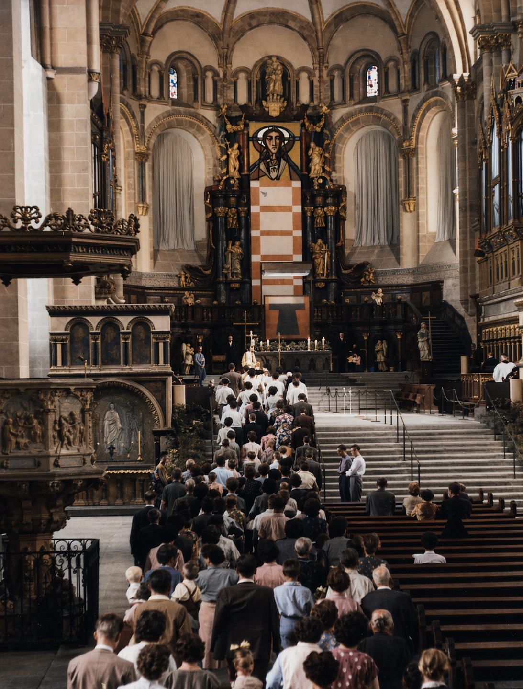
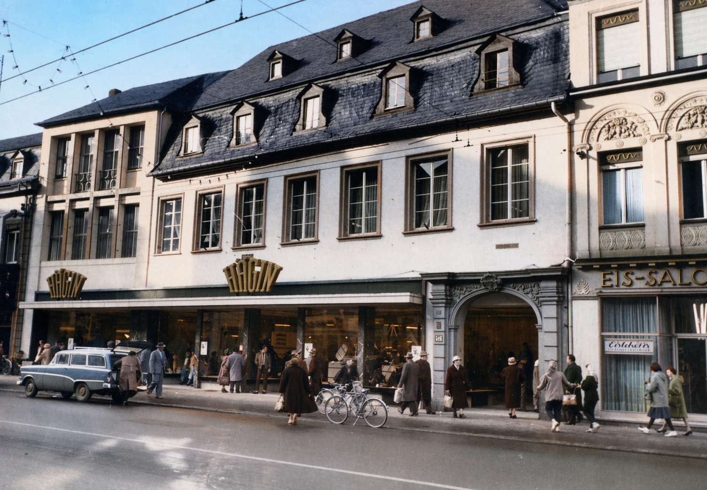

Wallfahrten und Einkaufen in Trier


Der Heilige Rock wird im Dom von Trier aufbewahrt und nur alle paar Jahrzehnte im Rahmen einer Wallfahrt gezeigt. Vor dem Zweiten Weltkrieg war das zuletzt im Jahr 1933. Vierzehn Jahre nach Kriegsende sollte er erneut ausgestellt werden. Die Menschen sehnten sich nach gemeinschaftlichen, religiösen Feiern; überall lag eine spürbare Aufbruchsstimmung in der Luft. Die Wirtschaft brummte und viele Familien besaßen inzwischen ein Auto, mit dem sie die Reise nach Trier antreten konnten. So auch wir.
Unser Fiat 1100, Baujahr 1953, war zwar nicht besonders zuverlässig, doch wenn mein Vater den Motor einmal zum Leben erweckt hatte, hielt er in der Regel auch einige Kilometer durch. Meine Eltern beschlossen, die Fahrt nach Trier zu wagen. So brachen wir im Herbst 1959 frühmorgens auf. Es ging über schmale, holprige Landstraßen. Meiner kleinen Schwester wurde schon kurz hinter Morbach schlecht und so wir mussten wir gelegentliche Zwangsstopps einlegen. Der Fiat schnaufte weiter in Richtung Trier, die Schalesbach hoch, an Thalfang vorbei über Büdlicherbrück und Fell bis wir nach (für uns empfunden) schier endloser Zeit unser Ziel erreichten.
In Trier angekommen, bot sich uns ein überwältigendes Bild. Die Stadt war so viel größer als Morbach und vollgepackt mit Pilgern. Vor dem Dom bildeten sich lange Schlangen. Alle wollten den Heiligen Rock sehen. Für uns Kinder war er allerdings keine große Sensation – er wirkte eher wie ein abgetragenes Kleidungsstück vom Flohmarkt. Viel spannender fanden wir andere Dinge: die gewaltig in den Himmel ragende Porta Nigra, die vielen Andenkenstände, Eisverkäufer und riesig wirkende Einkaufsmärkte.
Die Morbacher Bekleidungsgeschäfte Sonntag, Matzenbach und Humpert konnten da in Bezug auf Größe und Ausstrahlung nicht mithalten. Besonders beeindruckten uns Hettlage und Hägin: Kaufhäuser, in denen unsere Eltern sich bereits nach warmer Kleidung für den Winter umsahen. Uns Kindern war die Winterkleidung ziemlich egal. Uns zog die Spielzeugabteilung von Hägin an - wie ein Magnet.
Dort gab es Dinge, die wir Dorfkind noch nie gesehen hatten: glitzernde Blechautobahnen, auf denen kleine mit einer Feder aufgezogene Blechautos durch vertiefte Fahrbahnen sausten. Modelleisenbahnen von Märklin und Trix. Trix-Metallbaukästen, mit denen man Autos, Kräne und alles, was die Fantasie zuließ, zusammenschrauben konnte. Beim Anblick dieser Spielzeuge spürten wir gleichzeitig Begeisterung und Wehmut. Wie gern hätten wir eins davon mit nach Hause genommen! Doch wir wussten, dass das Haushaltsgeld knapp war und dieser Wunsch unerfüllt bleiben würde.
Immerhin: Weihnachten war nicht mehr weit. Und bei Spielwaren Thömmes in Morbach gab es schließlich auch Trix-Modelleisenbahnen und Metallbaukästen…